1. 实验目的
熟悉 TCP 头部结构及各字段功能。
掌握 TCP 协议的序列号、确认应答、连接状态机等关键机制，理解三次 “握手” 和四次 “挥手” 过程。
熟悉HTTP/1.1 协议的交互过程与格式。
2. 实验任务
本次实验包括以下两个子任务：
在完成协议栈ICMP协议的基础上，实现仅支持服务端逻辑的简化版TCP协议。该实现包含序列号机制、确认应答机制、以及连接状态机，以实现面向连接的基础可靠传输功能。
基于上述简化版 TCP 协议，构建一个小型Web服务器，使其能够处理并响应简单的HTTP请求。
最终构建的系统应支持基本的网页浏览功能，并且要通过实验评测系统的测试验证。
重要
常见坑点预警
SYN和FIN都各占用一个序号；不要只在“携带数据”时才更新seq。ACK表示“下一个期望收到的字节序号”，不是“最后收到的那个字节序号”。TCP 校验和覆盖伪首部、TCP 头部和数据区；计算前同样要先把校验和字段清零。
tcp_test通过并不代表tcp_server一定正确；三次握手、四次挥手和 HTTP 集成测试仍要抓包核对。若连接卡在握手 / 挥手中间状态，请优先参考 典型 Bug 排查手册 中“TCP 序列号与确认号更新错误”。
3. 实验原理
3.1. TCP协议概要
TCP（Transmission Control Protocol）协议是一种面向连接、可靠且基于字节流的传输层通信协议。与 UDP（User Datagram Protocol）不同，UDP 不保证数据传输的可靠性，而 TCP 通过一系列机制来实现可靠传输。具体而言，TCP 会先建立连接，利用序列号确保数据有序传输，借助确认应答机制保证接收方正确收到数据，同时通过超时重传机制修复可能丢失的数据。此外，TCP 还具备流量控制和拥塞控制机制，能够根据网络状况动态调节发送速率，避免网络过载。这些特性使得 TCP 特别适用于文件传输、电子邮件和网页浏览等对数据可靠性要求较高的通信场景。
在本次实验中，我们只需实现支持服务端逻辑的简化版 TCP 协议，重点关注连接的建立以及确认应答机制，从而实现基础的可靠传输能力。
3.1.1. TCP头部
传输层位于网络层之上，其数据包结构如下图所示：
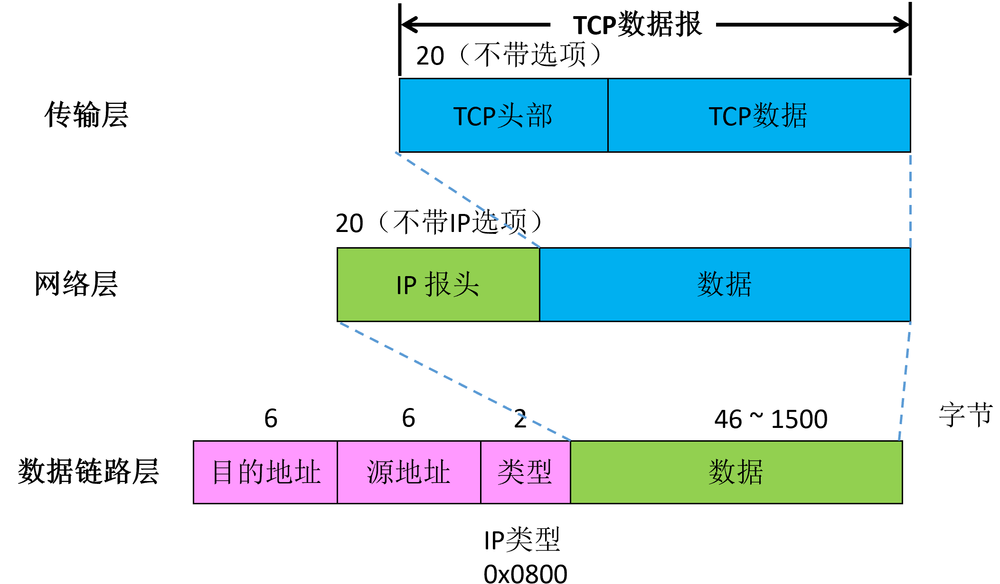
TCP 的头部结构长度通常为 20 字节，若包含可变长的选项部分，最长可达 60 字节。
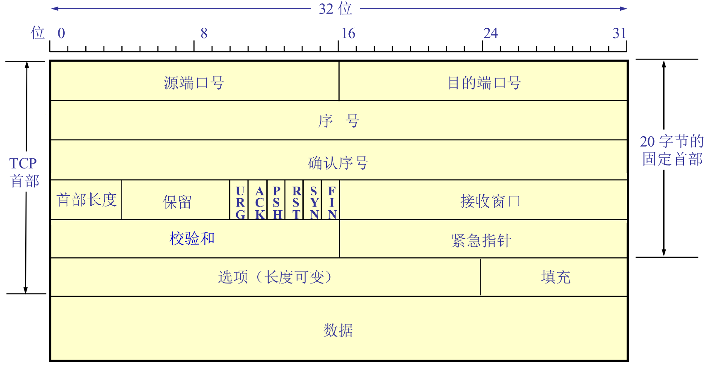
源端口号（Source Port）：长度 16 位。标识数据发送方的端口号，用于区分同一主机上多个应用程序或进程。
目的端口号（Destination Port）：长度 16 位。标识数据接收方的端口号。与源端口号一起，用于确定传输数据的源应用和目标应用。
序号（Sequence Number）：长度 32 位。表示数据包中第一个字节的序列号，用于数据有序传输和丢包重传。在连接建立时（SYN 报文），该值为初始序列号（ISN）；在数据传输时，序号随着数据的传输按字节递增。
确认序号（Acknowledgment Number）：长度 32 位。期望从对方接收数据的字节序号，累计确认，用于实现可靠数据传输。只有当 ACK 位被置为 1 时，该字段才有效。表示期望接收的下一个数据字节的序列号。
首部长度（Header Length/Data Offset）：长度 4 位。指示 TCP 首部的长度，单位是 4 字节。例如：首部长度为20字节，则该字段值为20/4=5。
保留（Reserved）：长度 3 位。保留字段，必须设置为 0。
标志位（Flags）：长度 9 位。用于标识 TCP 报文段的状态和控制数据传输，本次实验主要关注以下几个标志位：
ACK：确认标志，标识确认序号字段有效。
RST：复位标志，用于异常中断、重新建立TCP连接。
SYN：表示该TCP段是一个建立新连接请求控制段。
FIN：表明请求释放TCP连接。
窗口大小（Window Size）：长度 16 位。表示接收方的接收窗口大小（缓冲区剩余空间），用于流量控制，控制发送方的发送速率，避免网络拥塞。
校验和（Checksum）：长度 16 位。用于差错检测，包括TCP伪首部、TCP首部和应用层数据三部分。
紧急指针（Urgent Pointer）：长度 16 位。本实验默认置零。
数据（Data）：可变长度。实际要传输的应用层数据。
3.1.2. TCP建立连接：三次“握手”
TCP建立连接的过程如下所示：
服务器最初处于 LISTEN（监听）状态，等待客户端的连接请求。
客户端初始化序列号 seq = x，并向服务器发送 SYN 报文，该报文用于请求建立新连接。
服务器收到SYN报文后进入SYN_RCVD状态，初始化服务端序列号seq=y，并向客户端回复SYN | ACK报文，确认号ack_seq=x+1。
客户端收到SYN | ACK报文后，回复ACK报文，序列号seq=x+1，确认号ack_seq=y+1，报文可能携带数据。
服务器收到ACK报文后，转移到ESTABLISHED状态，连接建立完成，进行数据传输。
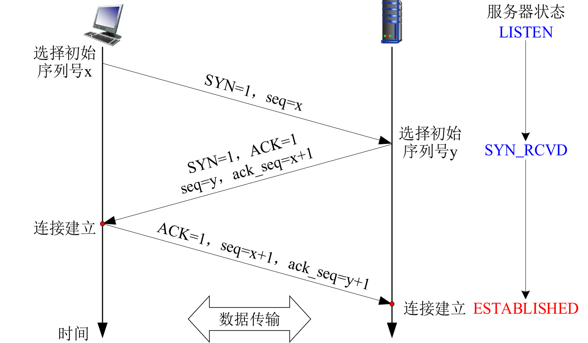
3.1.3. TCP断开连接：四次“挥手”
TCP断开连接的过程如下所示：
服务器最初处于ESTABLISHED状态。
客户端发送FIN报文，请求关闭连接。
如果服务器没有还要传输的数据，则跳到步骤4；否则，回复ACK确认关闭请求，并进入CLOSE_WAIT状态。
服务器发送FIN | ACK报文给客户端，表明准备关闭连接，进入LAST_ACK状态。
客户端收到FIN报文后，回复ACK确认。客户端会进入等待状态，等待2倍MSL（报文最大存活时间），确保所有报文被接收后，正式关闭连接。
服务器收到ACK，连接关闭。
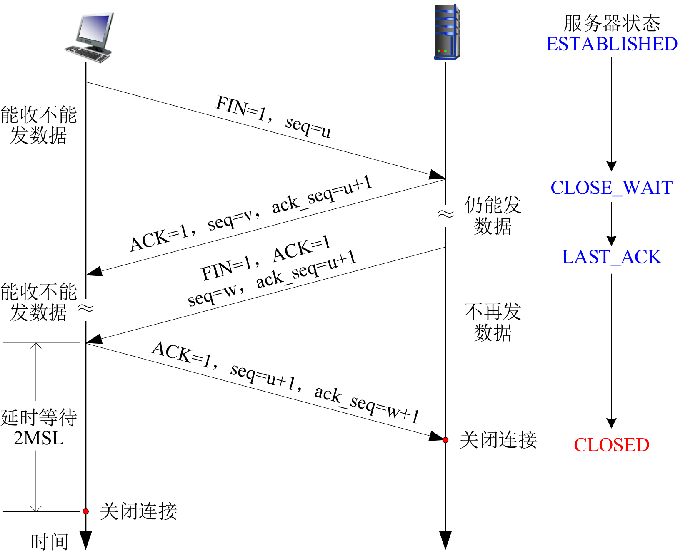
3.1.4. 实验框架简介
3.1.4.1. TCP 连接对象
实验框架可以串行地同时支持多个 TCP 连接。
TCP 连接的上下文信息通过 tcp_connection 结构体表示，定义于 tcp.h
文件：
typedef struct tcp_connection {
/* TCP connection states */
tcp_state_t state; // 当前 TCP 连接的状态（如 LISTEN、ESTABLISHED）
uint8_t not_send_empty_ack; // 标识是否需要发送空 ACK
/* TCP communication states */
int port; // 连接对应的本地端口号
uint32_t seq; // 当前发送序列号
uint32_t ack; // 当前确认号
} tcp_conn_t;
TCP 连接表 tcp_conn_table
是一个哈希表（map_t），用于管理所有当前的 TCP 连接，定义于
tcp.c 文件：
static map_t tcp_conn_table; // [src_ip, src_port, dst_port] -> tcp_conn
其键为一个三元组（tcp_key_t ），由远端 IP
(remote_ip)、远端端口 (remote_port) 和本地端口 (host_port)
组成；值为对应的 TCP 连接对象 (tcp_conn_t)。
当接收到一个 TCP
数据包时，系统可以通过tcp_get_connection()函数查找或者新建对应的
TCP 连接；系统也可以通过tcp_close_connection()函数关闭特定的 TCP
连接。
3.1.4.2. 简化与不足
本实验仅实现了一个简易的用于服务端的TCP协议（runnable），包括如下基本功能：
连接管理：通过状态机实现服务端TCP连接的生命周期，包含“三握手”连接建立和“四挥手”连接释放。
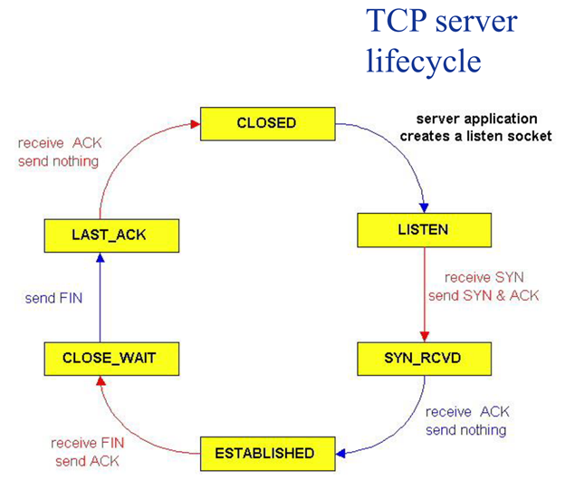
基础可靠传输：实现了基本的序列号和确认号机制，实现了简单的包乱序处理，可以保证上层应用接收到的数据包有序。
不过，该简化版 TCP 协议存在以下剪枝和不足：
流量控制/拥塞控制：固定窗口大小不变（为最大大小）、未实现慢启动和拥塞避免等算法。
可靠传输：未实现超时重传、未对乱序包进行高效处理，故而仅适用于网络环境稳定的场景。
未实现客户端逻辑：仅支持服务端逻辑，无法作为客户端与其他服务器建立连接。
3.2. HTTP协议概要
HTTP（HyperText Transfer Protocol，超文本传输协议）是万维网应用层的通信协议，采用C/S架构，用于客户端与服务器之间的数据传输。客户端（如浏览器）通过发送HTTP请求获取服务器上的资源，服务器则返回网页、图片或视频等对象作为响应内容。HTTP基于TCP协议，依靠其可靠的传输机制保证数据的完整性和有序性。同时，HTTP是无状态的，每次请求都是独立的，不会保留之前的交互信息。
HTTP/1.0是最早的HTTP协议版本，每请求一个对象都会建立和关闭一次TCP连接，导致频繁的连接开销，效率较低。HTTP/1.1在此基础上进行了多项改进，最显著的变化是引入了持久连接（Persistent
Connection），默认开启Connection: keep-alive，允许在一个TCP连接上进行多次对象的请求和响应，显著减少了连接建立和释放的开销。HTTP/1.1是当前Web通信的主流协议。
在本次实验中，我们需要基于简易TCP协议实现一个小型的Web服务器，能够处理并响应简单的HTTP/1.1请求，实现基本的网页访问功能。
3.2.1. HTTP/1.1 交互过程
HTTP服务器监听请求：HTTP服务器默认在80端口等待客户端的连接请求。
建立TCP连接：HTTP客户端（如浏览器）向服务器发起连接请求，服务器接受请求后，双方通过三次握手建立TCP连接。
客户端发送HTTP请求：客户端通过已建立的TCP连接发送HTTP请求，消息中的URL用于标识客户端请求的资源。请求过程通常如下：
客户端首先请求index.html文件，该文件中可能包含对其他资源的引用。
客户端根据这些引用，并行发起多个请求，获取页面中涉及的所有对象，如JPEG图片、视频文件、动态脚本等。
服务器响应请求：服务器解析客户端的HTTP请求，生成包含所请求资源的HTTP响应消息，并通过TCP连接发送给客户端。
关闭连接：当所有资源传输完成后，客户端主动关闭TCP连接（发送FIN报文），释放网络资源。
3.2.2. HTTP/1.1 协议格式
由上述交互过程可以看到，HTTP协议有两类消息：请求消息（request）和响应消息（response）。
3.2.2.1. 请求消息
GET /somedir/page.html HTTP/1.1<CR><LF> # 请求行，包含GET、URL、协议版本
Host: www.someschool.edu<CR><LF> # 首部行（本实验不涉及）
User-agent: Mozilla/4.0<CR><LF>
Connection: close<CR><LF>
Accept-language:fr<CR><LF>
<CR><LF>
(extra carriage return, line feed) # 请求体（本实验不涉及）
注：<CR>和<LF>分别指回车符（Carriage Return）和换行符（Line Feed），即\r和\n。
3.2.2.2. 响应消息
HTTP/1.1 200 OK<CR><LF> # 状态行(协议版本， 状态码，相应状态信息)
Connection: Keep-Alive<CR><LF> # HTTP/1.1 默认开启长连接
Content-Type: text/html<CR><LF> # 响应体的MIME类型
Content-Length: 6821<CR><LF> # 响应体长度
<CR><LF> # (注意此处需要有一个<CR><LF>)
data data data data data ... # 数据
其中，状态代码可以是“200 OK”、“404 NOT FOUND”等。
4. 代码实现
4.1. 简易TCP协议
同学们需仔细研读本实验提供的代码框架，将 src/tcp.c 文件中的相关函数补充完整。关于实验系统框架的详细介绍，可查阅 实验框架简介。
4.1.1. TCP数据报输出处理
同学们要自主实现 tcp_out() 函数，其具体功能和步骤如下：
Step1 添加 TCP 报头：
首先调用buf_add_header()函数添加TCP报头。
Step2 填充 TCP 首部字段：
将 win 字段设置为最大 TCP 窗口大小（TCP_MAX_WINDOW_SIZE），uptr 字段置为零。操作时需注意字节序问题。
Step3 计算并填充校验和：
先把校验和字段填充为 0，接着调用 transport_checksum() 函数计算校验和，最后将计算得到的校验和结果填入校验和字段。
Step4 发送 TCP 数据报：
调用 ip_out() 函数，将处理好的 TCP 数据报发送出去。
4.1.2. TCP数据报输入处理
同学们要自行实现 tcp_in() 函数中的状态转移和响应部分，具体功能及步骤如下：
Step1 更新连接状态与回复报文标志：
依据接收包的数据，更新当前 TCP 连接的内部状态，并填写回复报文的标志部分。
Step2 数据交付与错误处理：
如果接收报文携带数据，则将数据部分交付给上层应用。调用map_get()函数查询tcp_handler_table是否有该目的端口号对应的处理函数（回调函数）。如果没有找到，则调用buf_add_header()函数增加IPv4数据报头部，再调用icmp_unreachable()函数发送一个端口不可达的ICMP差错报文。如果能找到，则去掉TCP报头，调用处理函数来做相应处理。
Step3 发送回复报文并更新序列号：
调用 tcp_out() 函数发送回复报文，同时更新 TCP 连接的序列号。详细步骤可参考代码注释。
4.2. 小型Web服务器
同学们需认真阅读本实验提供的代码框架，补充完整 app/web_server.c 文件中的http_respond()函数，具体步骤如下：
Step1 ：依照注释补充发送 404 响应的代码
Step2/3 ：依照注释补充发送 200 响应的代码
5. 实验自测
本实验包含tcp_test 测试（组件测试）、tcp_server 测试（集成测试）以及 Web 系统测试，请按顺序依次完成这些实验自测。
对比维度 |
tcp_test 测试（组件测试） |
tcp_server 测试（集成测试） |
Web 系统测试 |
|---|---|---|---|
测试目标 |
验证 TCP 协议基础收发功能 |
验证 TCP 协议栈与物理网络的协同 |
验证端到端 HTTP 服务功能（应用层实现） |
测试层次 |
协议层单点测试 |
协议栈集成测试 |
业务系统级测试 |
测试范围 |
仅 TCP 协议模块 |
Eth/ARP/IP/TCP 协议栈 |
TCP + HTTP + 文件系统交互 |
测试环境 |
虚拟网卡 + 离线数据包（无真实网络） |
真实物理网卡 + 调试工具 |
真实浏览器 + 网络协议栈 |
输入数据 |
预生成的 .pcap 测试包 |
人工输入的测试字符串（如 “HITSZ”） |
浏览器 HTTP 请求（GET 等） |
输出验证方式 |
对比日志与预存数据包 |
Wireshark 抓包分析 + 调试工具回显 |
浏览器页面渲染效果 + Wireshark 抓包 |
本节后续截图和网卡配置步骤基于 Windows。使用 Linux 环境进行自测时，请按实际环境选择对应指南：
Linux 物理机、WSL2 或自建 Linux 虚拟机：纯 Linux/WSL2 环境（veth）。
OSLab Ubuntu 虚拟机：OSLab Ubuntu 虚拟机环境。
两份指南都包含组件测试和基于 veth 的在线集成测试步骤；Lab9 还可按指南测试 tcp_server 和 web_server。
5.1. tcp_test 测试
与UDP类似，TCP自测也需要通过tcp_test测试。
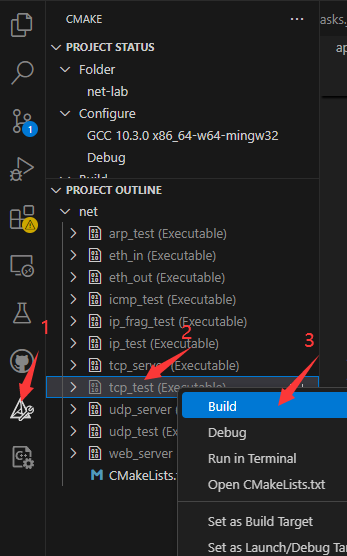
接着，打开VSCode的终端，到build目录下，输入ctest -R tcp_test进行自测。
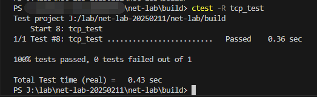
✅ 成功：终端显示 100% tests passed
❌ 失败：根据错误日志排查问题，可参考 Eth协议调试指南
注意，该组件测试未涉及对序列号、确认号和校验和的测试，通过测试不意味着实现完全正确，还需进行下一节的集成测试。
5.2. tcp_server 测试
与 udp_server 测试类似，进行 tcp_server 测试前，需要确保自定义网卡的 IP 地址配置正确，即网络号与物理机网卡相同，主机号与物理机网卡不同。若实验环境与 udp_server 测试时一致，则无需再次修改。
tcp_server自测步骤如下：
Step1：编译tcp_server
在 VSCode 中执行 CMake 编译
选择 “在终端中运行”（生成可执行文件）
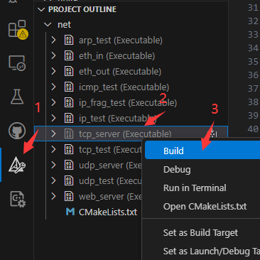
Step2：配置抓包工具（Wireshark）
打开 wireshark， 选择物理机的计算机网卡作为抓包对象 ，并设置过滤条件为：
eth.addr == XX.XX.XX.XX
XX.XX.XX.XX 是自定义虚拟网卡的MAC地址，详见include/config.h头文件。
1 #define NET_IF_MAC \
2 { \
3 0x00, 0x11, 0x22, 0x33, 0x44, 0x55 \
4 } //自定义网卡mac地址
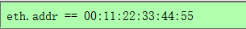
Step3：启动协议栈
在 VSCode 中选择“在终端中运行”
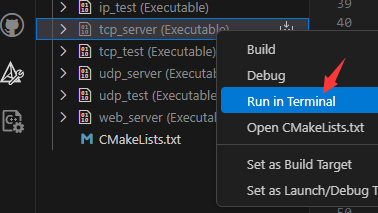
终端显示如下：
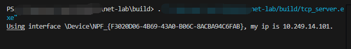
Step4：建立TCP连接
打开TCP&UDPDebug调试工具（点这里下载），点击“创建连接”，类型选择“TCP”，目标 IP：10.249.14.101（ 该目标IP地址需要改成你自己代码中config.h中定义的IP地址 ），目标端口号：60000，本机端口：随机端口。设置完成，点击创建。
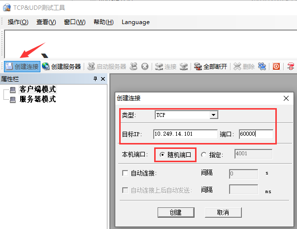
点击连接
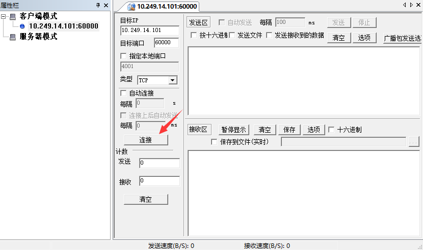
Step5：发送测试数据
在TCP&UDPDebug调试工具的发送窗口输入“HITSZ”测试字符串，点击发送。此时调试工具能够接收到虚拟网卡回送的数据包。如下图所示。
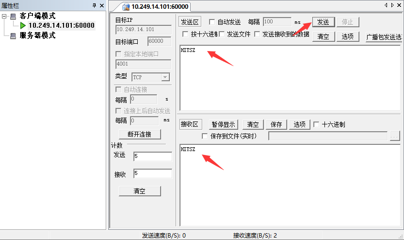
在终端上也能看见tcp_server的运行结果。
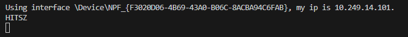
此时，Wireshark上也有数据包的交互。
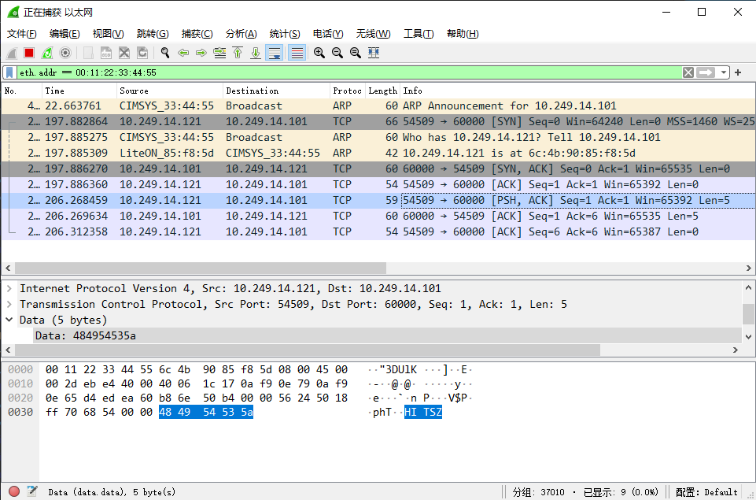
注意
请仔细分析 Wireshark 捕获到的报文（包括 ARP、TCP 报文），并将分析结果记录到实验报告中。
5.3. web系统测试
Step1：编译运行 web_server
在终端中编译运行web_server：
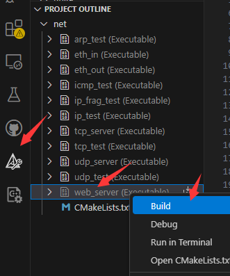
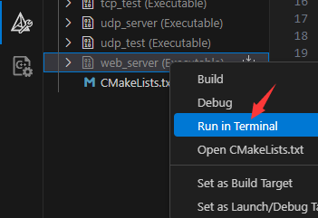
Step2：访问 Web 服务器
打开浏览器（或者使用wget、curl等命令行工具），访问10.249.14.101（ 该目标IP地址需要改成你自己代码中config.h中定义的IP地址 ），即可看到对应界面：
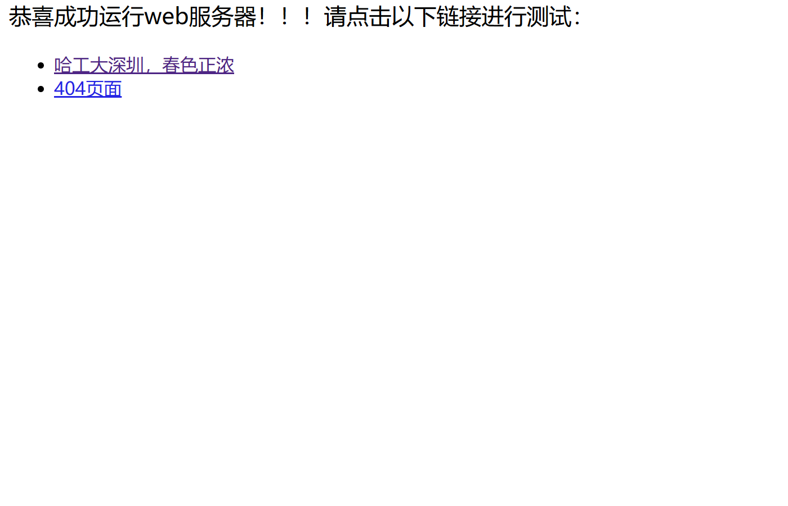
Step3：链接测试
点击两个链接测试可看到如下效果：
“哈工大深圳，春色正浓”网页显示：
404页面显示：
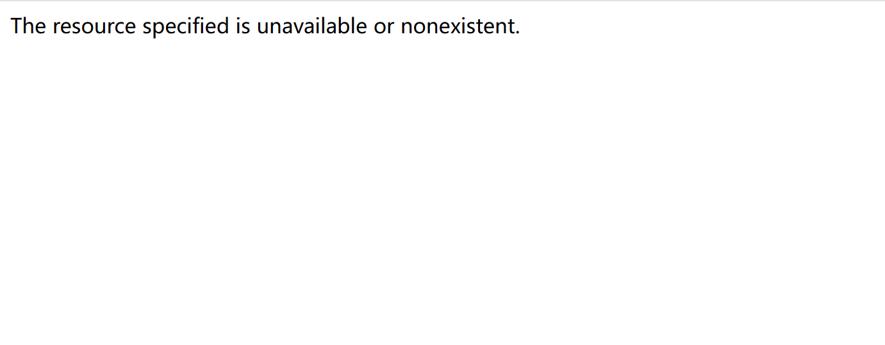
Step4：观察数据包交互
Wireshark上也有数据包的交互：
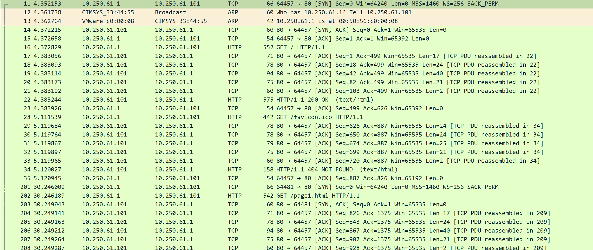
注意
在testing/data/http_test目录下，有正确实现下的HTTP抓包的.pcap文件，可以根据其进行debug。并且，由于实现剪枝，暂不支持服务端主动关闭连接，所以可能需要手动关闭浏览器，并等10-30s，由客户端关闭连接，才可以在Wireshark中观察到FIN报文。
注意
请分析你自己用Wireshark抓包工具捕获到的相关报文（包含ARP、TCP、HTTP报文），解析报文内容，并写到最终统一提交的协议栈实验报告中。
完成 Lab9 后，请按 协议栈实验提交与自检 的说明统一提交协议栈实验材料。